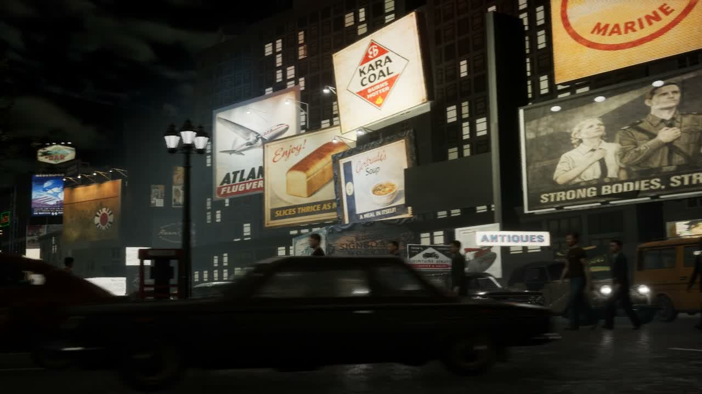
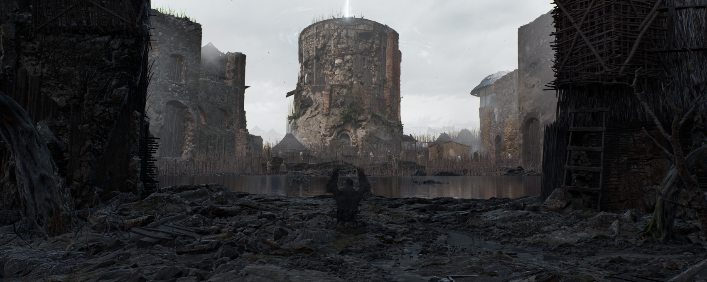
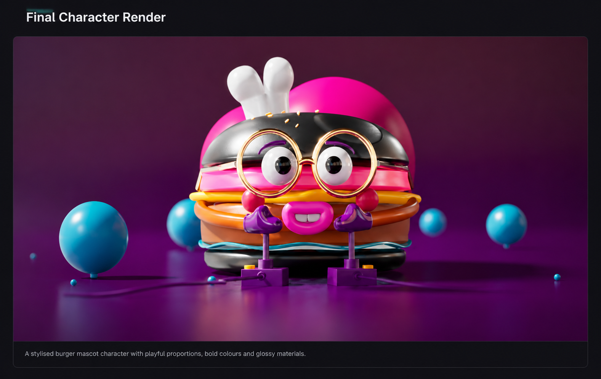

Observe before building.
I analyse a reference from its camera view first. Graphic hierarchy, proportions, material response and light become separate decisions to test.

VISUAL COMMUNICATION GRADUATE / DEVELOPING A REAL-TIME ART PRACTICE
Unreal Engine environments & lighting.
Graphic design thinking, brought into cinematic scenes.
My focus: signage, materials, light and camera-led composition.
01 / SELECTED WORK
Start with my reference-led Unreal Engine scene, then explore atmosphere and stylised character presentation.
My contribution: many poster and sign graphics, most scene material development, reference-led lighting and scene assembly.

↗A quiet ruin. A winged presence. A study in scale, atmosphere and emergence.

↗Playful form and glossy surfaces, explored through final renders and production views.
02 / BACKGROUND & DIRECTION
UCA Visual Communication graduate
Developing toward junior environment and lighting work.
I bring a graphic designer's eye for hierarchy, colour and image-making into Unreal Engine scenes.
My current focus is environment assembly, materials, lighting and cinematic composition. In the Times Square project, that includes making many of the poster and sign graphics and translating them into illuminated surfaces within the scene.
I use sourced assets where appropriate and separate those resources from my own contribution. My portfolio is a record of developing practice, not a claim of professional production experience or original authorship of every model.
VISUAL COMMUNICATION PORTFOLIO ↗03 / CREATIVE PERSPECTIVE
My current approach connects observation, graphic design and scene-making.
I analyse a reference from its camera view first. Graphic hierarchy, proportions, material response and light become separate decisions to test.
A sign is more than a flat image. Its surface, illumination and place in the composition all contribute to the identity of a scene.
I distinguish scene assembly and visual development from sourced models, and use process views to explain the contribution behind the finished image.